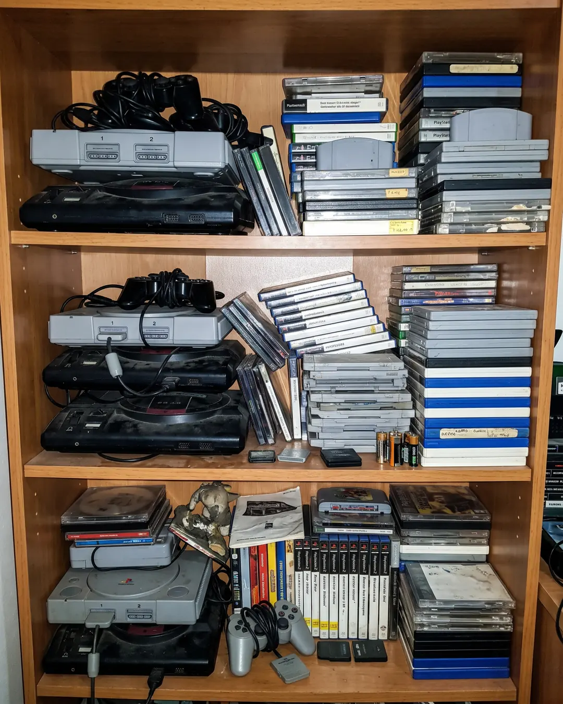

Case #13 · Video games
Images
-
AI
The suspect's confession
Two friends playing together on a bedroom floor with controllers in hand, surrounded by cans, cables and an open bag of potato chips; yellowish lamp light.
-
AI
The suspect's confession
A kid playing a console on the sofa, photo taken from behind him, with the TV in the background showing an invented racing game and the living room in dim light.
-
REAL
Real photograph
-
REAL
Real photograph
-

AI
The suspect's confession
A shelf at home with old games and consoles piled up in no order, with boxes without recognizable covers and some dust; direct flash.
Fact or Fake
-
FACT “A video game company secretly buried millions of cartridges to get rid of its inventory.”
In 1983, Atari secretly buried millions of unsold cartridges, mostly of E.T., in a landfill in Alamogordo, New Mexico.
- It was considered a myth for decades.
- A 2014 excavation dug the games up.
-
FACT “Minecraft's "Creeper" was born from a coding mistake.”
Markus "Notch" Persson was trying to program a 3D pig and mixed up the height and length values by mistake.
- The result was an elongated creature with four short legs.
- He decided to color it green and make it the game's most famous enemy.
-
FAKE “A video game has a hidden ending that unlocks if you beat the final mission with your pulse under 75 bpm.”
No documented commercial video game ties an ending to keeping a specific heart rate.
- There were peripherals that measured pulse, like the Nintendo 64 Bio Sensor.
- The Wii Vitality Sensor was canceled.
- Some experimental games use biometric metrics.
-
FAKE “In a 2025 video game, NPCs organized and refused to sell weapons or give quests when they noticed players skipping their dialogue.”
No video game has programming like that: NPCs cannot organize a strike over what the player does.
- Modern NPCs react in increasingly complex ways.
-
FACT “The longest non-playable cutscene in a video game lasts 71 minutes straight.”
The Guinness record belongs to Metal Gear Solid 4: Guns of the Patriots (PlayStation 3), with a 71-minute epilogue with no interaction.
- It is a single continuous scene.
- The game was directed by Hideo Kojima.